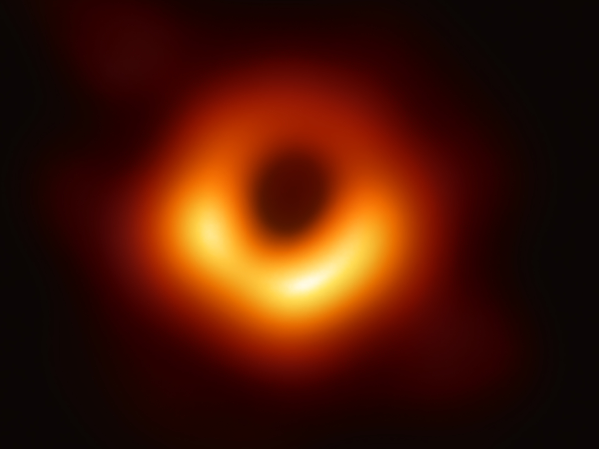

What Happens Inside a Black Hole?
Black holes are among the strangest objects in the universe. They are invisible, incredibly dense, and possess gravity so powerful that not even light can escape once it gets too close.
Scientists can observe black holes from the outside, but what happens inside them remains one of the biggest unanswered questions in modern physics. The laws of nature that work almost everywhere else begin to break down when we look deep inside a black hole.
What exactly is a black hole?
A black hole forms when a massive star runs out of fuel and collapses under its own gravity. The star's material becomes compressed into an extremely small region, creating a gravitational field so strong that escape becomes impossible.
Contrary to popular belief, black holes are not giant cosmic vacuum cleaners. They only pull on nearby objects with the same gravitational rules that govern stars and planets. The difference is that their gravity becomes overwhelming near their center.
The event horizon: the point of no return
Surrounding every black hole is a boundary called the event horizon. This is often described as the "point of no return."
If an object crosses the event horizon, escaping becomes impossible because the speed required to leave would be greater than the speed of light. Since nothing can travel faster than light, everything that enters must continue inward.
To an outside observer, an object falling toward a black hole appears to slow down as it approaches the event horizon. The object's light becomes stretched and dimmer until it eventually fades from view.
What would happen if you fell in?
Falling into a black hole would be very different from falling anywhere else. As you move closer, the difference in gravity between your feet and your head would become enormous.
This effect is known as tidal force. The lower part of your body would be pulled much more strongly than the upper part, stretching you into a long, thin shape.
For smaller black holes, this stretching would become extreme before reaching the event horizon. For supermassive black holes, however, you might cross the event horizon without immediately noticing anything unusual.
Can we see inside a black hole?
Unfortunately, no. Once light crosses the event horizon, it cannot return. Since astronomers rely on light and other forms of electromagnetic radiation to study the universe, the interior of a black hole remains hidden from direct observation.
This means that everything scientists know about black holes comes from observing their effects on surrounding matter, stars, gas clouds, and space itself.

This illustration shows a black hole surrounded by a glowing accretion disk. The bright material spirals inward as gravity pulls it closer to the event horizon.
The mysterious singularity
According to Einstein's theory of general relativity, all the matter that falls into a black hole eventually collapses toward a central point called a singularity.
A singularity is thought to have infinite density and virtually zero volume. At this point, gravity becomes infinitely strong and the mathematical equations of physics stop producing meaningful answers.
This is where one of the biggest problems in science appears. General relativity predicts the singularity, but quantum physics suggests that nature may not allow infinities to exist.
Do the laws of physics break down?
Everywhere else in the universe, scientists can use physical laws to predict how objects move and interact. Near a singularity, however, those laws begin to conflict with each other.
General relativity describes gravity extremely well on large scales, while quantum mechanics explains the behavior of particles on very small scales. Inside a black hole, both theories become important at the same time, yet they do not fully agree.
This is one reason physicists are searching for a theory of quantum gravity — a framework that could unite both descriptions of nature and explain what truly happens inside black holes.
The black hole information paradox
One of the biggest puzzles in modern physics is known as the black hole information paradox. According to quantum mechanics, information about a physical system can never truly be destroyed. Yet black holes seem to swallow matter and erase all information about it.
Imagine throwing a book into a black hole. The book contains information in the form of words, images, and physical structure. If the black hole eventually disappears, where does that information go?
This question has challenged physicists for decades. Some theories suggest the information is somehow stored on the event horizon, while others propose it escapes through processes we do not yet understand.
Can black holes evaporate?
In 1974, physicist Stephen Hawking made a surprising discovery. By combining ideas from quantum mechanics and relativity, he showed that black holes may not be completely black.
Tiny quantum effects near the event horizon can cause black holes to slowly emit energy. This process is known as Hawking radiation.
As a black hole emits this radiation, it loses a tiny amount of mass. Over incredibly long periods of time, the black hole could gradually shrink and eventually disappear.
For large black holes, this process is extremely slow. A supermassive black hole could take far longer than the current age of the universe to evaporate completely.
Does time behave differently inside a black hole?
Gravity affects time itself. According to Einstein's theory of relativity, stronger gravity causes time to pass more slowly.
Near a black hole, this effect becomes dramatic. To a distant observer, someone approaching the event horizon would appear to move more and more slowly.
For the person falling in, however, time would seem normal. They would continue moving toward the center while the outside universe appeared to speed up.
Some calculations suggest that near certain black holes, an infalling observer could witness vast stretches of the future universe before reaching the singularity.
Could black holes be wormholes?
Some theoretical models suggest black holes could be connected to wormholes, hypothetical tunnels through space and time.
In science fiction, wormholes often act as shortcuts between distant parts of the universe. While mathematics allows certain wormhole solutions, there is currently no evidence that real, stable wormholes exist.
Even if they do exist, they may collapse too quickly for anything to pass through them. For now, wormholes remain an intriguing possibility rather than an established reality.
Could a black hole lead to another universe?
Some scientists have proposed that the interior of a black hole might connect to another region of space, or even an entirely different universe.
These ideas are highly speculative, but they arise because current theories cannot fully describe conditions at the singularity. Until a complete theory of quantum gravity is developed, many possibilities remain open.
It is even possible that black holes could play a role in the creation of new universes, though this idea remains far beyond what can currently be tested.
How do scientists study black holes?
Although black holes themselves are invisible, astronomers can detect their effects. Matter falling toward a black hole becomes extremely hot and emits powerful radiation before crossing the event horizon.
Scientists also observe the motions of nearby stars. If a star appears to orbit an invisible object with enormous mass, a black hole may be present.
In 2019, astronomers released the first direct image of a black hole's shadow, providing one of the strongest confirmations that these extraordinary objects truly exist.
The future of black hole research
Black holes sit at the intersection of gravity, quantum mechanics, and cosmology. Understanding them may help scientists uncover some of the deepest laws governing reality.
Future telescopes, gravitational-wave detectors, and advances in theoretical physics could reveal new clues about what happens beyond the event horizon.
Every discovery brings us closer to answering one of humanity's greatest questions: what truly lies inside a black hole?
Why this mystery matters
Black holes are not just exotic objects floating in distant galaxies. They challenge our understanding of space, time, matter, and information.
By studying them, scientists hope to uncover a deeper theory of reality—one that unites the largest structures in the cosmos with the smallest particles in nature.